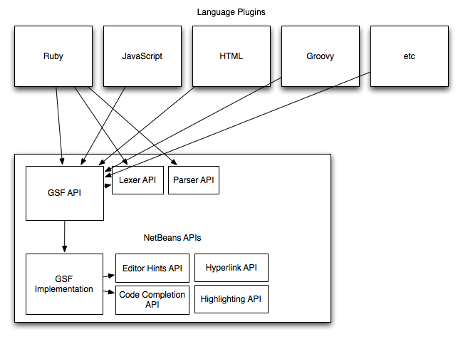

GSF is a language infrastructure for NetBeans. The purpose of GSF is to help create first-class editing support for a group languages (like Ruby, Groovy, JavaScript, Python, Scala, PHP, etc). By "first-class" editing support I mean all the features that we currently have for Java in NetBeans. Deep editing support including intelligent code completion, quick fixes and hints, and so on.
The abbreviation "GSF" is an historical artifact and a new name should probably be assigned.
The GSF API is intended for "language plugins". These are modules which add support for new languages (such as Ruby, JavaScript, HTML, CSS and so on) to NetBeans. The key philosophy behind GSF is:
The language plugin deals only with language specific details.
The implication of this is that nearly all UI, and all "infrastructure" code like listening on editor changes, scheduling parsing, implementing editor actions etc. are handled by the GSF infrastructure. A language plugin should just focus on specific features as they pertain to this language.
If you are trying to get started writing a new language using GSF, see the Getting Started document, which will try to order the tasks involved and point to the relevant sections.
For an example of this, take a look at the following diagram. This shows how "Instant Rename" works in GSF. The Instant Rename action itself (editor action implementation, keybinding registration, etc.) is provided by GSF. The language plugin implements two services:
As you can see, GSF provides implementations for a lot of the UI and interactions that you need for deep editing support for your language. You implement your lexer, parser, and feature implementations like code completion, go to declaration, quickfixes etc. based on analyzing your own parse trees. You talk through feature specific APIs to GSF, and GSF does the rest.
Here's a rough architecture diagram for GSF:

As you can see, language plugins talk mostly through the GSF APIs
to implement their features. GSF is in turn implemented in many cases
on top of existing NetBeans APIs. In some cases, the abstraction on
top of existing APIs (such as the Hyperlink API) is very thin. In other
cases, such as for quickfixes, mark occurrences or semantic highlighting,
GSF provides a lot of UI implementation under the hood on top of the
existing APIs. You might wonder why GSF should bother with features
such as code completion and hyperlinking when the existing APIs are
pretty complete. There are several reasons for this:
Furthermore, for many actions, there is a LOT of code behind the scenes that is not language specific. Take mark occurrences for example. The only language specific thing there is determining, for a given offset, what the other corresponding occurrences are in terms of editor offsets. Everything else: ensuring that the parse information is up to date, listening on caret changes, painting highlights for the occurrences, defining and implementing "goto previous occurrence" and "goto next occurrence", and so on, should all be implemented in just one shared place.
One thing which is not obvious from the diagram above is that clients are free to use NetBeans APIs directly. For example, in NetBeans 6.1, the HTML module uses GSF for parsing, navigator, embedding etc. - but it registers its own CompletionProvider using the NetBeans APIs instead of GSF's code completion handler interface. It is possible to combine GSF with for example Schliemann or a custom written editor kit or custom written data loaders. More details about this are found in the custom editor kit section.
One of the key principles of GSF is to keep all UI in GSF. In the old days, each language support would define all its own logical editor types, color definitions, and so on. That made it really tricky to provide editor themes, as well as keep things consistent. A literal string may have one color in one file type, and another color in another filetype.
This has some implications for GSF:
JavaSource.runUserActionTask()).
This lets modules create arbitrary features for Java - and this
is how the various Java modules (navigation, hints, etc)
operate.
SourceModel class, but you're discouraged
from using it).
getIcon() method, where you normally return null,
but you can override the icon there. This is how I return a
Ruby specific icon for Ruby keywords in code completion (and
ditto for JavaScript). But overriding UI is the exception, not
the norm.
A language plugin basically registers a bunch of callbacks. These are invoked at appropriate times by the infrastructure. There are two types of callbacks:
GSF uses the Lexer API in NetBeans directly. All GSF languages must provide a Lexer language. It must also be registered in the Editors mime folder. See the Registration section for more details.
GSF provides a parser interface. You can register a parser, and GSF will call your parser when needed.
NOTE: There is a new Parsing API underway. This will be something equivalent to the Lexer API, but applied to parsing. The plan is for GSF to remove its own Parser registration and interfaces and replace it with the standard Parser API. This will allow embedding and coordination not just among GSF-based languages, but for all languages that implement the parsing API (such as Java, and C/C++, which are not GSF based).
The Parser API basically just asks you to parse a given CharSequence, and return the result as your own subclass of the ParserResult interface. It is in your own parser result that you store your own AST reference. You will probably need it to implement most of the features. There is a separate document describing the parsing aspects of GSF. (Eventually you'll also want to implement incremental parsing.)
Indexing lets you register a service which will extract information from your parse results, and store them in an index which can be queried quickly later. Your indexer will be called "at the right times" by the infrastructure:
To implement semantic highlighting, you need to
register an implementation of the
SemanticAnalyzer interface.
You will be given your own ParserResult object, and
you need to return a Map<OffsetRange, Set<ColoringAttributes>>.
So, you'll iterate your own AST, look for things to highlight, such as
method definitions, parameters and unused variables, and for each node,
look up its source offsets (start, end integer offsets in the document),
and then place them in the document:
// Aha, this is an unused variable reference!
int nodeStart = node.getStartOffset();
int nodeEnd = node.getEndOffset();
result.put(new OffsetRange(nodeStart, nodeEnd), ColoringAttribute.UNUSED_SET);
Mark Occurrences is very similar to this. You implement the
OccurrencesFinder interface,
where you return a Set<OffsetRange> for the symbols that should be
highlighted as other occurrences of the symbol at the given offset.
TODO: I plan to write some documents explaining how to do keystroke handling, formatting, declaration finding, code completion, etc.
GSF services, such as the lexer, parser, and feature implementations, must all be registered with the GSF infrastructure. For details on how to do this, see the Registration document.
GSF supports language embedding - supporting nested languages, like JavaScript and CSS support inside HTML files, Ruby support (and JavaScript and CSS support) inside ERb/RHTML files, and so on. The mechanism of how this works is described fully in the embedding document.
There is a separate module in the contrib repository, gsf.tools,
which provides a number of tools in the Tools | GSF Development menu.
Details are described in the GSF Development Tools document.
GSF makes it really easy to unit test your feature implementations. Details on how to do this is described in the unit testing document.
I will describe the various GSF limitations here. For now, they are
listed (in very brief form) in the following Wiki page:
http://wiki.netbeans.org/GsfIssues